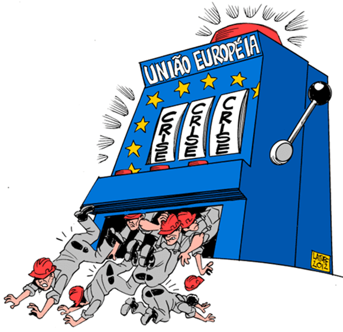
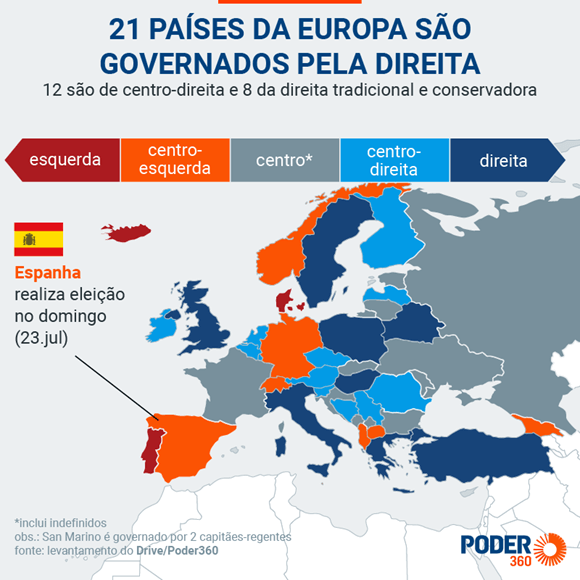
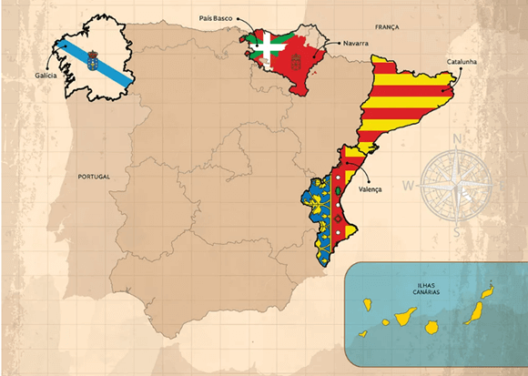
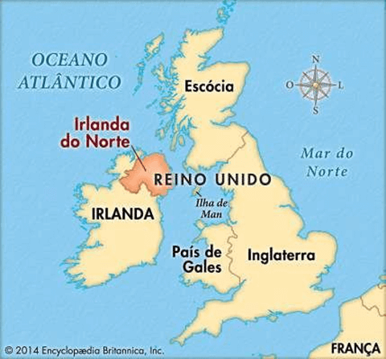
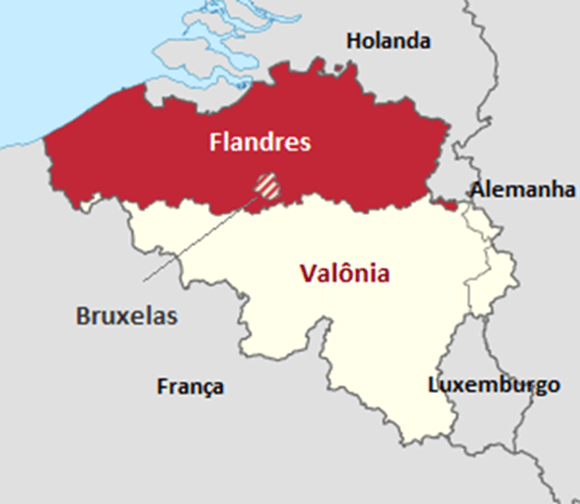
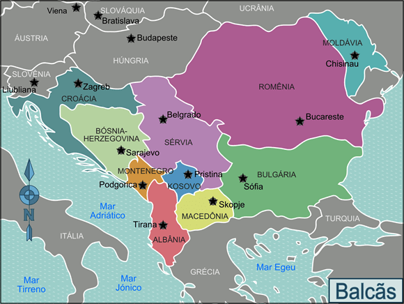
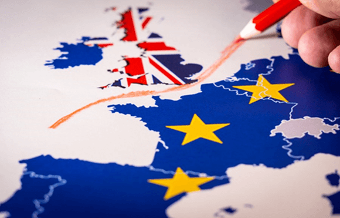
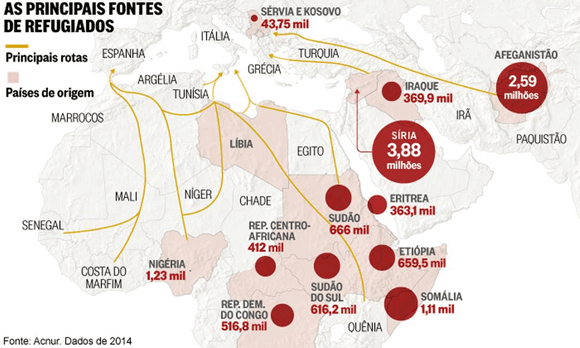
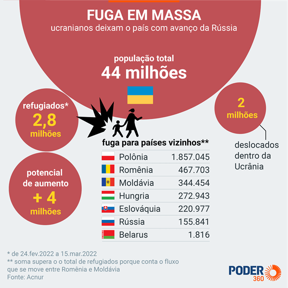

Conteúdo: : Crise econômica, conflitos separatistas: país Basco, Irlanda do Norte,
Catalunha, Bélgica, Brexit, Balcãs, Imigração, Xenofobia.
Objetivo: Identificar e compreender os principais conflitos na Europa atualmente.
Digite seu nome
Introdução
Anteriormente, estudamos o processo de integração da União Europeia.
Vimos a formação de seu blobo econômico e político.
Na aula de hoje veremos os diversos desafios que a UE enfrenta, incluindo desigualdades regionais, crises
econômicas e conflitos separatistas.
Nesta aula, exploraremos alguns desses problemas e como eles moldam a Europa contemporânea.
Questões para serem respondidas no caderno sobre o tema da aula de hoje:
1. O que é a União Europeia (UE)?
2. Quais foram os principais impactos da crise econômica de 2008 nos países do sul da Europa?
3. Como a crise econômica de 2008 contribuiu para a ascensão de partidos de extrema-direita na Europa?
4. Quais são alguns exemplos de partidos de extrema-direita mencionados no texto e seus países?
5. O que é Brexit e quando ocorreu o referendo que decidiu pela saída do Reino Unido da UE?
6. Quais foram algumas das consequências econômicas do Brexit para o Reino Unido?
7. Como o Brexit reavivou as discussões sobre a independência da Escócia e a reunificação da Irlanda?
8. Quais foram as implicações da morte da Rainha Elizabeth II para o Reino Unido?
9. Quais são os principais desafios da imigração enfrentados pela Europa?
10. Como a imigração está relacionada ao aumento da xenofobia na Europa?
Crise Econômica

Fonte: https://latuffcartoons.wordpress.com
A crise econômica
de 2008 teve um impacto significativo em muitos países europeus, particularmente no sul da Europa,
como Grécia, Espanha e Itália. As consequências foram severas, com a economia de muitos desses países
enfrentando recessões profundas, altas taxas de desemprego e enormes dívidas públicas. Para combater a
crise, as instituições europeias e o Fundo Monetário Internacional (FMI) impuseram programas de austeridade
rigorosos que incluíam cortes drásticos nos gastos públicos, reformas no mercado de trabalho e aumentos de
impostos.
×
A crise econômica de 2008, também conhecida como a Grande Recessão, começou com o colapso do
mercado imobiliário nos Estados Unidos, causado por empréstimos hipotecários arriscados e
práticas de crédito irresponsáveis. Quando a bolha imobiliária estourou, muitos bancos e
instituições financeiras enfrentaram falências, levando a uma crise de liquidez e perda de
confiança nos mercados financeiros. Esse evento resultou em uma recessão global, afetando
gravemente economias em todo o mundo, inclusive na Europa, onde países como a Grécia e a Espanha
enfrentaram profundas recessões e crises de dívida.
Impactos da Crise Econômica:
Desemprego e Pobreza: A austeridade levou ao aumento significativo do desemprego, especialmente entre os
jovens. Na Grécia, por exemplo, a taxa de desemprego juvenil ultrapassou os 50% em alguns momentos da crise.
Muitas famílias viram suas rendas diminuir drasticamente, resultando em aumentos na pobreza e na
desigualdade social.
Cortes em Serviços Públicos: A redução nos gastos públicos afetou serviços essenciais como saúde, educação e
assistência social. Hospitais e escolas enfrentaram cortes de financiamento, o que deteriorou a qualidade
dos serviços oferecidos à população.
Descontentamento Social: As medidas de austeridade geraram protestos massivos e movimentos de resistência em
várias cidades europeias. O descontentamento social foi evidente nas frequentes manifestações e greves, que
por vezes resultaram em confrontos violentos com as forças de segurança.
Relação com a Ascensão da Extrema Direita:
A crise econômica de 2008 não apenas abalou a economia, mas também teve profundas repercussões políticas. Em
muitos países europeus, a insatisfação com as políticas de austeridade e a percepção de que as elites
políticas estavam desconectadas das realidades diárias dos cidadãos levaram ao crescimento do apoio a
partidos de extrema-direita. Esses partidos, com retóricas nacionalistas e populistas, prometeram uma
ruptura com as políticas estabelecidas e ofereceram soluções simplistas para problemas complexos.

Exemplos de Ascensão da Extrema Direita:
Alemanha - Alternativa para a Alemanha (AfD):
Fundado em 2013, inicialmente como um partido eurocético, a AfD ganhou tração com a crise migratória de 2015.
No entanto, as raízes de seu apoio podem ser traçadas até a crise econômica e a insatisfação com as
políticas de austeridade impostas à Grécia e a outros países do sul da Europa. A AfD criticou o resgate
financeiro a países europeus em crise e a política de portas abertas da chanceler Angela Merkel durante a
crise migratória, capitalizando o descontentamento econômico e social.
Hungria - Fidesz e Jobbik:
O partido Fidesz, liderado por Viktor Orbán, adotou uma retórica nacionalista e antiglobalista, usando a
crise econômica como um argumento contra a UE e suas políticas. Jobbik, um partido de extrema-direita,
também ganhou força ao criticar a corrupção e a gestão econômica, oferecendo uma alternativa radical às
políticas do establishment.
França - Frente Nacional (agora Reunião Nacional):
Liderado por Marine Le Pen, o partido ganhou popularidade ao criticar a UE, a globalização e a imigração. A
Frente Nacional capitalizou a frustração dos eleitores com o desemprego e a austeridade, prometendo
políticas protecionistas e um retorno ao controle nacional sobre a economia e as fronteiras.
Conflitos Separatistas na Europa
A Europa, apesar de sua busca por unidade, tem uma longa história de divisões internas e movimentos
separatistas que persistem até hoje.
País Basco (ETA): O País Basco, localizado na Espanha, tem uma forte identidade cultural
e linguística distinta. O grupo separatista ETA (Euskadi Ta Askatasuna) foi responsável por uma longa
campanha de violência buscando a independência. Embora o ETA tenha declarado um cessar-fogo em 2011, as
tensões e o desejo de autonomia ainda são presentes.

Fonte: Mundo estranho
Catalunha: A Catalunha, uma região rica no nordeste da Espanha, tem um forte movimento
independentista. Em 2017, um referendo de independência foi considerado ilegal pelo governo espanhol e
resultou em confrontos e prisões de líderes separatistas.
Irlanda do Norte (IRA): A Irlanda do Norte tem uma história de conflito entre unionistas
(principalmente protestantes, que querem permanecer no Reino Unido) e nacionalistas (principalmente
católicos, que desejam a reunificação com a República da Irlanda). O Acordo de Belfast de 1998 trouxe
paz, mas o Brexit trouxe novas tensões sobre a fronteira irlandesa.

Bélgica (Flandres e Valônia): Bélgica é dividida entre a região flamenga ao norte, que
fala holandês, e a Valônia ao sul, que fala francês. As diferenças econômicas e culturais entre as duas
regiões alimentam movimentos separatistas.

Balcãs: Os Balcãs (clique) são uma região marcada por conflitos étnicos e
territoriais. A desintegração da Iugoslávia nos anos 1990 resultou em guerras violentas e a criação de
novos países. As tensões étnicas ainda persistem, especialmente na Bósnia e Herzegovina, Kosovo e
Macedônia do Norte.

×
A região dos Balcãs, localizada no sudeste da Europa, é uma área geograficamente distinta e
complexa, abrangendo a Península Balcânica. Limita-se ao norte com a região da Europa
Central, a oeste com o Mar Adriático, ao sul com o Mar Mediterrâneo e a leste com o Mar Egeu
e o Mar Negro. Esta região é caracterizada por uma topografia variada, incluindo montanhas,
como os Alpes Dináricos e o maciço do Pindo, além de vales férteis e uma costa recortada. Os
Balcãs são conhecidos por sua diversidade étnica e cultural, refletida em seus vários
estados nações e histórias entrelaçadas. A região tem sido um ponto focal de conflitos
históricos e disputas territoriais, sendo um dos cenários mais complexos da Europa em termos
de identidade política e cultural.
Brexit e Seus Impactos

O Brexit, a saída do Reino Unido da União Europeia (UE), foi um evento de grande repercussão global, trazendo
incertezas e divisões tanto para o Reino Unido quanto para o bloco europeu. O referendo de 2016 resultou em
52% dos votos a favor da saída da UE, desencadeando um processo complexo de negociação e realinhamento
político e econômico.
Aspectos Econômicos do Brexit:
Perda de Acesso ao Mercado Comum: O Reino Unido perdeu o acesso sem tarifas e sem barreiras
ao maior mercado único do mundo. Isso afetou negativamente muitas empresas britânicas, especialmente aquelas
que dependem do comércio com a Europa. Empresas enfrentaram novos custos administrativos e alfandegários,
impactando setores como manufatura, pesca e serviços financeiros.
Novos Acordos Comerciais: O Reino Unido teve que negociar novos acordos comerciais com
países ao redor do mundo, um processo que é demorado e complexo. Embora tenha alcançado alguns sucessos,
como um acordo com o Japão, a escala e o alcance desses novos acordos muitas vezes não correspondem aos
benefícios do mercado único europeu. A relação comercial com a UE continua sendo um desafio, com questões em
torno do Protocolo da Irlanda do Norte e a regulação de bens e serviços.
Impacto Econômico Interno: A incerteza gerada pelo Brexit contribuiu para uma desaceleração
do investimento empresarial e uma redução no crescimento econômico. A libra esterlina sofreu depreciação
significativa, afetando o poder de compra dos britânicos e aumentando o custo das importações.
Impactos Políticos do Brexit:
Reavivamento das Discussões sobre a Independência da Escócia: O Brexit reavivou o movimento
pela independência da Escócia, já que a maioria dos escoceses votou para permanecer na UE. O governo
escocês, liderado pelo Partido Nacional Escocês (SNP), tem pressionado por um novo referendo de
independência, argumentando que a Escócia deveria ter o direito de decidir seu próprio futuro dentro da
Europa.
Reunificação da Irlanda: A saída do Reino Unido da UE trouxe à tona questões sobre a
fronteira entre a Irlanda do Norte (parte do Reino Unido) e a República da Irlanda (um membro da UE). O
Protocolo da Irlanda do Norte, que visa evitar uma fronteira rígida na ilha da Irlanda, criou tensões
políticas e comerciais. O Sinn Féin, partido que apoia a reunificação da Irlanda, ganhou força, e há umeuropa
crescente debate sobre um referendo de reunificação.
Direitos dos Cidadãos: O Brexit complicou os direitos dos cidadãos europeus que vivem no
Reino Unido e dos britânicos que vivem na UE. A livre circulação foi interrompida, levando a questões de
residência, trabalho e acesso a serviços sociais e de saúde. Programas como o "Settlement Scheme" foram
introduzidos para garantir os direitos dos cidadãos da UE no Reino Unido, mas a implementação tem sido
problemática.
O Reino Unido Após a Morte da Rainha Elizabeth II: A morte da Rainha Elizabeth II em
setembro de 2022 marcou o fim de uma era e trouxe mudanças significativas para o Reino Unido. A transição
para o reinado do Rei Charles III tem implicações tanto simbólicas quanto práticas.
Mudanças Simbólicas: A Rainha Elizabeth II foi uma figura de estabilidade e continuidade
durante sete décadas. Sua morte gerou um período de reflexão sobre o papel da monarquia e a identidade
nacional britânica. O novo reinado de Charles III pode trazer uma mudança de foco, com maior ênfase em
questões como mudança climática e modernização da monarquia.
Unidade Nacional: A morte da rainha também levantou questões sobre a unidade do Reino Unido.
O papel unificador da monarquia está sob escrutínio, especialmente em um momento de tensões políticas
internas, como os movimentos de independência na Escócia e na Irlanda do Norte.
Desafios Econômicos e Políticos: O Reino Unido continua enfrentando desafios econômicos
significativos, exacerbados pela pandemia de COVID-19 e pelo impacto do Brexit. O novo governo deve lidar
com questões como inflação, crise energética e desigualdade regional. Politicamente, há um cenário volátil,
com o Partido Conservador enfrentando pressões internas e externas, e a oposição tentando capitalizar o
descontentamento público com as políticas governamentais.
Desafios da Imigração na Europa

A Europa enfrenta desafios significativos com a imigração, especialmente de regiões em conflito como o
Oriente Médio e a África. A chegada de refugiados e migrantes econômicos tem gerado tensões políticas e
sociais, levando a debates acalorados sobre políticas de acolhimento, integração e segurança.
Contexto e Desafios:
Crises Humanitárias: Conflitos na Síria, Afeganistão e outras partes do Oriente Médio, bem
como instabilidade e pobreza na África, têm forçado milhões de pessoas a buscar refúgio na Europa. A
travessia perigosa pelo Mediterrâneo muitas vezes resulta em tragédias humanitárias. A guerra na Ucrânia em
2022 resultou em uma nova onda de refugiados, destacando a contínua relevância do tema da imigração na
Europa.

Pressão sobre Infraestruturas: A chegada massiva de refugiados pressiona os sistemas de
acolhimento e assistência social dos países europeus, especialmente naqueles que são os principais pontos de
entrada, como Grécia, Itália e Espanha. Serviços públicos, habitação, saúde e educação enfrentam desafios de
capacidade e financiamento, exacerbando tensões locais.
Integração e Inclusão: A integração dos migrantes nas sociedades europeias é um desafio
complexo, envolvendo questões de emprego, educação, saúde e participação social. A falta de políticas
eficazes de integração pode levar à marginalização e exclusão social, criando um ciclo de pobreza e
aumentando a vulnerabilidade dos migrantes.
Políticas de Imigração e Suas Implicações:
Políticas de Acolhimento: As políticas de acolhimento variam significativamente entre os
países europeus. Alguns adotam abordagens mais abertas, enquanto outros impõem restrições severas. A
Convenção de Dublin, que determina que o primeiro país de entrada é responsável pelo pedido de asilo, tem
sido criticada por sobrecarregar países fronteiriços.
Segurança e Controle de Fronteiras: A segurança é uma preocupação central, com muitos países
reforçando o controle de fronteiras para evitar entradas ilegais. Agências como a Frontex têm um papel
crucial na gestão das fronteiras externas da UE, mas enfrentam críticas por práticas controversas e falta de
transparência.
A imigração também trouxe um aumento na xenofobia, alimentada por crises econômicas e insegurança. Movimentos
nacionalistas e partidos de extrema-direita ganharam força em vários países europeus, propagando discursos
de ódio contra imigrantes e minorias.
Causas e Manifestação da Xenofobia:
Crises Econômicas: A crise econômica de 2008 e suas consequências prolongadas alimentaram o
desemprego e a precarização do trabalho, criando um terreno fértil para o surgimento de sentimentos
xenofóbicos. Imigrantes são frequentemente culpados pela escassez de empregos e pela pressão sobre os
serviços públicos, apesar das evidências de que muitas economias dependem da força de trabalho imigrante.
Insegurança Cultural: O medo de perda de identidade cultural e a percepção de que os
imigrantes não se integram adequadamente às sociedades de acolhimento alimentam a xenofobia. Mitos sobre a
criminalidade entre imigrantes são frequentemente explorados por políticos populistas para ganhar apoio
eleitoral.
Propagação de Discursos de Ódio: Partidos de extrema-direita e movimentos nacionalistas têm
explorado questões de imigração para ganhar apoio, usando retórica inflamatória que demoniza os imigrantes e
promove a divisão social. Exemplos incluem o Alternativa para a Alemanha (AfD) na Alemanha, a Frente
Nacional (agora Rassemblement National) na França, e o Fidesz na Hungria, que utilizam a imigração como tema
central de suas campanhas.
Impactos Sociais e Políticos da Xenofobia:
Polarização Social: A xenofobia contribui para a polarização social, dividindo comunidades e
criando um ambiente de hostilidade e medo. Incidentes de violência e discriminação contra imigrantes e
minorias aumentam, prejudicando a coesão social e minando os valores democráticos.
Desafios aos Valores Europeus: O aumento da xenofobia desafia os valores de diversidade,
inclusão e direitos humanos que a União Europeia busca promover. Políticas restritivas e atitudes
discriminatórias corroem a credibilidade da UE como defensora dos direitos humanos e da justiça social.
Relação com Conflitos Gerados pela Migração:
Tensões Políticas: A imigração tem gerado tensões políticas internas, com governos
enfrentando pressão de partidos nacionalistas e movimentos populistas. As políticas de imigração se tornaram
uma questão divisiva, com debates polarizados sobre acolhimento versus segurança.
Conflitos entre Estados Membros: A falta de consenso sobre a distribuição equitativa de
refugiados entre os Estados Membros da UE tem gerado conflitos e desunião dentro do bloco. Países como
Hungria e Polônia se recusaram a aceitar quotas de refugiados, desafiando as políticas da UE e criando
fraturas políticas.
Riscos de Radicalização: A marginalização e discriminação dos imigrantes podem levar à
radicalização de jovens, aumentando o risco de conflitos internos e terrorismo. A integração eficaz e a
promoção de valores inclusivos são essenciais para mitigar esses riscos e promover a harmonia social.
"Há mais coisas no céu e na terra, Horácio, do que foram sonhadas na sua vã filosofia."
(Hamlet) Shakespeare
P:Como a crise econômica afetou os movimentos separatistas
na Europa, como os do País Basco, Irlanda do Norte e Catalunha?
R: A crise econômica exacerbou os sentimentos separatistas em regiões
como o País Basco, Irlanda do Norte e Catalunha. A percepção de que os governos centrais não estavam
gerindo bem a economia aumentou o desejo de autonomia. Na Catalunha, por exemplo, a crise foi usada como
argumento para a independência, com líderes separatistas alegando que a região rica estava sendo
explorada economicamente por Madrid. No País Basco e na Irlanda do Norte, a crise também intensificou as
demandas por maior autonomia fiscal e política.
P:Quais foram as principais consequências econômicas e
políticas do Brexit para o Reino Unido e a União Europeia?
R: Economicamente, o Brexit levou à perda de acesso ao mercado único
europeu, aumento dos custos de comércio e incerteza para empresas. Politicamente, reacendeu debates
sobre a independência da Escócia e complicou a situação na Irlanda do Norte, onde o Protocolo da Irlanda
do Norte foi criado para evitar uma fronteira rígida com a Irlanda. A UE também enfrentou desafios, como
a necessidade de reconfigurar seu orçamento e lidar com a saída de um de seus maiores membros.
P:Como a imigração e a xenofobia estão relacionadas na Europa
contemporânea?
R: A imigração tem gerado tensões na Europa, com a chegada de
refugiados e migrantes pressionando infraestruturas e serviços públicos. Isso tem sido explorado por
movimentos nacionalistas e partidos de extrema-direita, que usam a imigração como pretexto para
propagandear discursos de ódio e xenofobia. A insegurança econômica e social exacerbada pela crise
financeira também contribui para o aumento da xenofobia, desafiando os valores de diversidade e inclusão
da União Europeia.